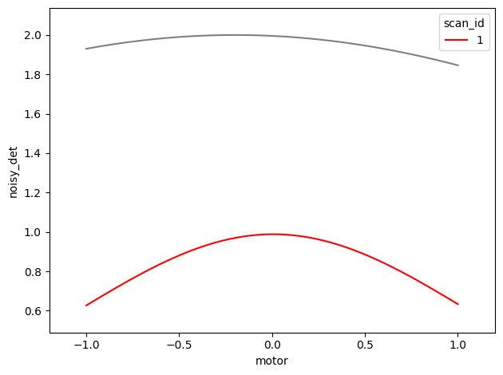
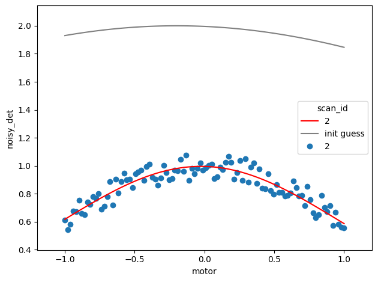

Important
You can run this notebook in a live session  or view it on nbviewer
or GitHub.
or view it on nbviewer
or GitHub.
Live Nonlinear Fitting¶
Configuration¶
This code would normally go in a script automatically run at startup. The user would not have to worry about this.
[1]:
%matplotlib widget
import matplotlib.pyplot as plt
import numpy as np
import lmfit
from bluesky import RunEngine
from bluesky.plans import scan
from ophyd.sim import motor, noisy_det
from bluesky.callbacks import LiveFit, LivePlot, LiveFitPlot
import matplotlib.pyplot as plt
RE = RunEngine({})
Data Acquisition¶
[2]:
fig, ax = plt.subplots() # As before, create plot to be able to follow the progress of the fit during the scan
[3]:
# define Gaussian function and save it as a model using lmfit
def gaussian(x, A, sigma, x0):
return A*np.exp(-(x - x0)**2/(2 * sigma**2))
model = lmfit.Model(gaussian)
# The initial guess (gray on the plot) is just a starting point from which the fitting algorithm works.
init_guess = {'A': 2,
'sigma': lmfit.Parameter('sigma', 3, min=0),
'x0': -0.2}
[4]:
# LiveFit example
lf = LiveFit(model, 'noisy_det', {'x': 'motor'}, init_guess)
# now add the plot...
lfp = LiveFitPlot(lf, color='r', ax=ax)
RE(scan([noisy_det], motor, -1, 1, 100), lfp)
[4]:
('e2237486-da43-4f83-974d-cae7d2462c65',)
[5]:
plt.gcf() # Unfortunately, since we do not see the motor positions relative to the fit,
# we cannot evaluate how well the fit worked.
[5]:

[6]:
# Show motor position vs. fit during the scan
fig, ax = plt.subplots() # explitly create figure to follow fitting
[7]:
lfp = LiveFitPlot(lf, ax=ax, color='r')
lp = LivePlot('noisy_det', 'motor', ax=ax, marker='o', linestyle='none') # plotting the noisy_det scalar object
RE(scan([noisy_det], motor, -1, 1, 100), [lfp, lp])
[7]:
('cc011068-a744-418b-80a5-e6da39bdab56',)
[8]:
# We can see that from imperfect initial conditions, the fit now matches the data well
plt.gcf() # Display a snapshot of the current state of the figure.
[8]:

[9]:
# Get the final fit parameters
lf.result.best_values
[9]:
{'A': 1.0136069592041332,
'sigma': 0.9476941764720359,
'x0': -0.006740457754969378}
Exercises¶
Try a different user-defined peak-like function to use as a model.